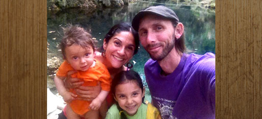

Latest Updates & Station News

The "Charles Sawtelle Memorial" Mountain Jam
Sunday, July 19, 2015 11am-4:30pm
The Gold Hill Inn, Gold Hill, CO
Celebrate 27 years of the Mountain Jam this Sunday!
KGNU's Annual "Charles" Mountain Jam will be held Sunday, July 19, in the side yard of the Gold Hill Inn in Gold Hill, Colorado. A KGNU tradition, the "Charles" is named in honor of the unwaivering KGNU supporter and Hot Rize guitarist Charles Sawtelle who helped start the event in 1989.
This is a family-friendly event for music fans that enjoy great music and delicious food in a spectacular setting.
The gate opens at 11:00 a.m. and the music runs 11:30am -4:30 pm, featuring sets by Chain Station, Sierra Hull, and Frank Solivan & Dirty Kitchen. Tickets are $20 for KGNU members, $25 for the general public, and are available now online through Brown Paper Tickets; more details can also be found through our website. All proceeds benefit KGNU.

KGNU's Station Manager Transition
You may have heard that KGNU is in the process of a "changing of the guard", with Tim Russo coming back to Boulder to become KGNU's Station Manager, a role David Wilson has so marvelously filled for the last two years. Tim and David have been working closely together shortly after the KGNU Board of Directors invited Tim to come on board as Station Manager. Tim and David will continue to work together throughout July to assure a smooth transition as Tim and his family gets settled here in Boulder and at KGNU.
Tim comes to KGNU from a long history of working with organizations and marginalized peoples throughout Latin America to develop communication strategies that put them in control of their own autonomous media outlets. Tim's work at COMPPA, an organization that he founded, has focused in particular on the importance of community radio, international communication rights, freedom of expression, and providing the training tools and processes necessary for marginalized peoples to develop, launch and maintain their own Community Radios. "KGNU has always been an inspiration and a model for me" says Tim, who is also a long time reporter for and Board Member for Free Speech Radio News. You may also know Tim from his years of reporting on KGNU's Latin America news program, La Lucha Sigue!
David will continue to be a significant member at KGNU, helping with work in particular on development, training, and our 3D Capital Campaign.
Good luck to both of you!
Listen to KGNU's live coverage of RockyGrass July 24th-26th
Once again, KGNU will be broadcasting live from the sold-out 2015 RockyGrass Festival in Lyons, July 24-26. In addition being live Friday, Saturday and Sunday mornings, we'll stream the entire festival online at AfterFM.com.com, KGNU's all music site. See the complete schedule below!
Performers at this year's RockyGrass include The Infamous Stringdusters, Del McCoury and David Grisman, Sam Bush, and Red Knuckles and the Trailblazers. We'll feature music, interviews, and more, live from backstage.
KGNU has been broadcasting live from RockyGrass since 2008 and began live streaming the event on AfterFM.com, KGNU's all music stream, in 2014, where you can explore the archives from our previous coverage. 2015 performances will be added to the archives throughout the weekend as the festival unfolds.
Please help us share the news about our RockyGrass broadcast and live stream. Festival!!!
On the Airwaves: KGNU 88.5 FM / 1390 AM (93.7 FM Nederland)
- Friday 9:30 am - Noon
- Saturday 9:00 am - 1:00 pm & 6:00 pm – 9:00 pm
- Sunday 9:00 am - 1:00 pm
Streaming on AfterFM.com:
- Friday 9:30 am - 10:30 pm
- Saturday 9:00 am - 10:30 pm
- Sunday 9:00 am - 10:00 pm

Summer Membership Drive Thanks!
We want to thank everyone who contributed during our summer mini-drive from July 7th to 12th, helping us exceeded our goal of $30,000. It is never too late to contribute. Please keep the music, news, and community voices flowing by making a contribution today online or by calling us at 303-449-4885. And congratulations to all of our drawing winners.
|